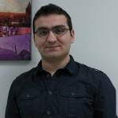

Kadromuz
Arş. Gör. Berkan Özgür

Berkan Öğür lisans derecesini 2012 yılında Sakarya Üniversitesi Sosyoloji bölümünde tamamladıktan sonra ertesi yıl Sakarya Üniversitesi Sosyoloji Anabilim dalında yüksek lisans eğitimine başladı. Aynı yıl Sakarya Üniversitesi Sosyal Bilimler Enstitüsünde araştırma görevlisi olarak çalışmaya başlayan Berkan Öğür, şu anda Sakarya Üniversitesi Ortadoğu Enstitüsü'nde Ortadoğuda Kürt Sorunu, Eleştirel Jeopolitik ve Kürdistan Coğrafyasının Jeopolitiği üzerine çalışmaktadır.
Yüksek Lisans Tezi
Kurdistan Representations in PKKs texts as a Dissident Geopolitical Discourses (1982 – 2013)
Çalışma Alanları
- Kurdish issue
- Critical Geopolitics
- Social Movements
- Ethnicity Studies
- Secularism
- Algerian politics.
Makale
- "Geopolitical Discourse in Kurdistan Maps", Turkish Journal of Middle Eastern Studies, Vol: 1, No: 2, 2014″
- Cezayir 2014, Ortadoğu Yıllığı 2014, Kemal İnat, Muhittin Ataman (Ed.), 2015.
- Çokkültürlülük Söylemleri Ve Milliyetçiliğin Dönüşümü, Bilgi Ekonomisi ve Yönetimi Dergisi / 2016 Cilt: XI Sayı: I, 2016.
- Cezayir 2015, Ortadoğu Yıllığı 2015, Kemal İnat, Muhittin Ataman (Ed.), 2016.
Uluslararası Bildiriler
- "Çokkültürlülük Söylemleri ve Milliyetçiliğin Dönüşümü", International Conference on Knowledge, Economy and Managment, 2013.
- "Bir Coğrafi Tahayyül Olarak Kürdistanın Temsili", II. Middle Eastern Congress, 2014.
- "Military Coup and Algerian Civil War in the Absence of Democracy", III. Middle Eastern Congress, 2016.
- "ABD gözünden "makbul Kürt": Seküler olan mı, savaşçı olan mı?" – VIII. International Uludag Congress, 28-29 November 2016.
Kitap Değerlendirmeleri
- "La France de lintegration", Dominique Schnapper, Akademik İncelemeler Dergisi, Vol. 8, Sayı 2, 2013.
- Ortadoğuda Devlet ve İktidar: Otoriter Rejimler Üzerine Bir İnceleme, Ortadoğu Analiz, Kasım-Aralık Cilt 6, Sayı 65, 2014.
- "Kürtler ve Kürdistan Tarihi", Ortadoğu Analiz, Mart-Nisan Sayı: 61, 2014.
Rapor
- "Kuzey Irak - Türkiye İlişkileri PKK, Güvenlik ve İşbirliği", Zana Baykal ve Ali Balcı ile birlikte, 2013.
Yorum
- Cezayirde Yeni Kabine: Ekonomik Kriz ve Sancılı Dönüşüm,
- Çözüm sürecini Lice olaylarıyla yeniden düşünmek
Proje
- Ortadoğuda Radikalleşmenin Kökenleri, (Araştırmacı), IRCICA, 2016.
İletişim
0 (264) 295 3610